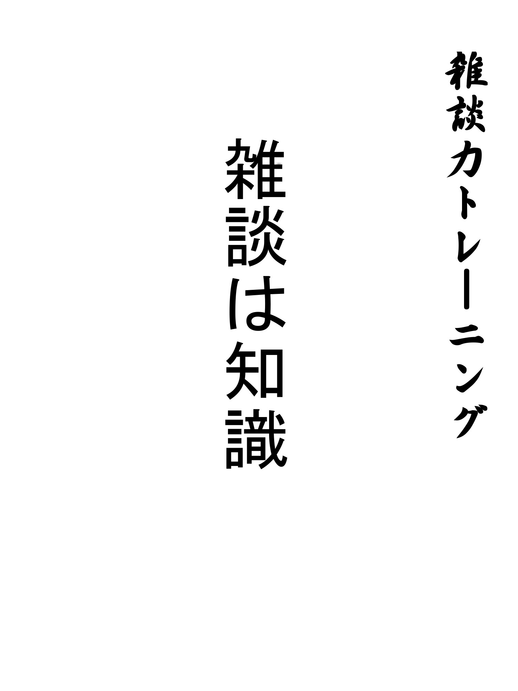

| 1日5分芸人から学ぶ雑談力トレーニング！～仕事・恋愛でモテる会話～ | |
| 鈴木孝義 | |
| (2017) | |
皆さん本書をご覧いただきありがとうございます。本書は会話力、雑談力向上をきっかけによりよい人生・よりよい人間関係を構築して頂きたく、書いた会話トレーニングの本です。本書をきっかけに「人との会話」というものを見直し、会話の重要性を再認識して頂いた上で、今後の生活に役立てて頂きたいと願っています。
会話というものは人生において、欠かすことができません。誰とも話さないで生活するというのは無理です。自宅で作業する仕事をずっとしていても、話さなければいけない場面はやってきます。「人と話すのが億劫だ」という方でも、話さなければならない場面が出てきます。会話は避けては通れないものなのです。その会話をいいものにできれば、人生もより楽しくなっていきます。
・会話スキルは重宝される
現代社会では、パソコンやスマートフォンが普及し、メールでのやり取りが増え、以前に比べれば会話の機会が減ってきました。実際、パソコンで作業する仕事をしている場合、会話をほとんどしない日もあるでしょう。会話は避けては通れないものの、会話量自体は減ってきています。
このような現状は会話力を鈍らせます。しかし、このような現状は会話ができるということがスキルに繋がる可能性を秘めているのです。会話の量が減っている中で、会話ができる人間になる。これは大きなメリットであり、今後必要とされる人間です。
・本書トレーニングの考え
本書では雑談や会話をする上で、重要なことや考え方・テクニックを紹介していきます。
第一章では間違った会話の考え方をまとめました。会話に正解はないという意見も散見されますが、誤解を生んでいる考えが広がっていることも事実です。「話せるようになる」には何が大事なのかを解説したのが第一章です。
第二章では、会話で重要となる考え方を提示しています。会話ができなくなるのはどのような時なのかを考え、その「会話ができなくなる状態」を回避する考え方や会話を楽しむ考え方をまとめています。
第三章では、実際のテクニックについて紹介。会話におけるテクニックにを解説しています。
そして、第四章ではそれらの考え方やテクニックを身につけるためのトレーニングを具体的に挙げました。
本書のトレーニングや会話に対する考え方を学び、楽しい会話を身につけることによって、いろいろな人と楽しく話せる充実した人生を切り開いていきましょう。
会話に関しては様々な考え方が存在しています。本書をお読みの皆さんも、これまでにいろいろな会話の考え方に触れたと思います。しかし、何が正しくて、何が正しくないのかを判断するのは非常に難しいです。なので、会話での考え方、会話がスムーズに進む考え方を本章で提案します。
「会話でも一番大事なのは話す力じゃない！」
会話で大事なのは話す力。そう思いがちですが、決してそうではありません。話す力も必要ではありますが、それよりも必要なのは知識です。
会話が最も弾まないケースを考えて見てください。それは知識が全くない時です。野球に詳しい人が野球を雄弁に語っている。しかし、自分はサッカーのことしか知らないので、会話を続けられないし、つまらない。そのような事態が一番会話が弾まないケースです。
これならまだいい方です。スポーツ等、大まかな共通点がある時はまだなんとかなるかもしれませんが、相手が政治の話をし始めたのに、自分はアニメにしか興味がないというようなジャンルにも共通点がない場合は会話にとても苦労します。
このような点からわかるように、会話を続ける上で、最も重要なのは知識です。知識があれば、話を合わせることができますし、話すことができます。反対に知識がなければ、相手の話を一方的に聞く以外に方法はありません。それでも会話が進む場合もありますが、意見を求められた時に、自分から能動的に話すことができないので、会話としては非常に苦しいです。このことを踏まえれば、会話で最も大事なのは知識となっていくのは当然です。
「話す力は二の次！知識が第一！」
知識を得るといっても、机に向かって勉強しろといっているわけではありません。もちろん勉強は大事ですし、会話を円滑に進める上で、非常に重要です。しかし、より重要なのは様々な体験を積み上げることです。体験による知識が非常に重要です。どんどん積極的にいろいろなものを体験していきましょう。
例を挙げると、ディズニーランド等のレジャー施設がそうです。ディズニーランドの知識を得るにはディズニーランドに行くしかありません。そのような実際に体験した知識をかき集めていくのです。
「常に出力を意識」
体験で知識をかき集めると言っても、ただただ体験するだけでは話すことができません。常に出力を意識します。「話せる体験ができるまで帰らない」ぐらいの意識が必要です。「絶対に人に話せる体験・経験を手に入れるんだ」という意識をはっきりと持って物事を体験しましょう。知識はトークの基盤です。
出力という点で言うと、芸能人であれば、ブログを書くというのがあります。芸能人は毎日のようにブログを書いていますが、ブログを書くというのは簡単ではありません。ブログを始めて、最初のうちはそれほど難しくないですが、だんだんとネタが尽きてきます。そうなると、非常に大変です。ネタを作り出さなければなりません。ネタを作り出すためには日々の生活から意識して、「ネタを作り出す努力」をしなければなりません。このような「ネタを作り出す努力」を皆さんにもして頂く必要があるのです。
常に人に話したいことを記憶する意識で、日々の生活を送っていきましょう。その意味で、ブログや日記は効果的です。人に話したいこと・話せそうなことを常に記憶する意識を持って、毎日を過ごしていきましょう。
「会話力を上げるなら騙しまくれ！」
人に嘘をついてはいけない。誠実でなければいけない。そのように小さい頃から教わってきたと思います。しかし、それは大きな間違いです！なぜなら、大人になってから、本当のことをそのまま言うことが、ほとんどないからです。本音ではない建前の世界が存在します。残念ではありますが、正直が正義ではないのです。
もう一つ。嘘はトーク力を劇的に向上させます。悪い例ですが、詐欺師はトークが上手いです。上手いから、騙される人が出てきてしまうのです。芸人だってそうです。本当のことばかり言っているわけではありません。若干話を盛ったり、脚色したりしています。それは悪く言うと嘘です。嘘をついているのです。しかし、嘘を繋ぎ合わせて、話を作る作業はトーク力を向上させる上で、欠かすことができません。
嘘というのは高度な技術です。なかった事実を創り上げ、それを真実のように具体的証拠を並べていく。要するになかったものを想像で補い、それを話していくという作業になります。「考えながら話す」ことが高度に求められるのです。その作業はトーク力を確実に向上させます。
「話せばいいわけではない！」
皆さんお気づきかもしれませんが、ここまで話す技術より、記憶の問題や嘘をつくこと等、話す技術以外のことについて多く触れています。それはなぜかと言うと、一番重要だからです。特にインプットは重要です。
「インプットなき話はつまらない」
非常に重要です。
知識がなくても、講座などでトレーニングすれば、印象よく話すことができるようになるでしょう。それでいいのなら、いいのですが、やはり、会話や雑談は楽しむのが一番です。印象よく、愛想よくやり過ごすのもいいですが、会話を楽しんでもらおうというのが本書の意図です。なので、会話を楽しんでもらうために、幅広い知識を薄くでもいいので、インプットしましょう。
インプットするために重要なことは毎日情報収集の習慣をつけることです。テレビ・新聞や雑誌、ネットニュースなどから、幅広い分野の知識を毎日得て、先程も申し上げたように日々体験を積み上げることが重要です。日々のインプットが会話に生きてきます。日々の体験、日々ニュースに触れることがより多くの会話を生み、雑談力に繋がります。なので、意識的に毎日ニュースに触れましょう。知らないことは会話に活かすことができません。
「とにかくインプット」
会話を上達させるにはインプットが全て。本章の中心となるのはインプットです。トークが上手くなりたいからといって、いきなり話す練習を始めたり、何かしらの講座を習ったりするのは本当の意味での会話には繋がりません。上辺だけの印象がよくなったりする効果はありますが、それは皆さんが望むべきところではないでしょう。
毎日をしっかりインプットして、豊富な知識を得ることが重要です。インプットして、会話を楽しめるようにしていきましょう。
・第一章まとめ
第一章では会話において、普段のインプットが重要であるというお話しをさせて頂きました。第二章では、会話を楽しむためにはどうすればいいのかという部分をお話ししてきます。会話を楽しくするにはどうしたらいいのか？テクニックと共にお話しします。
「芸人はなぜ会話できるのか？」
先程の章で、インプットの大切さを書かせて頂きました。そのインプットと関連して、「なぜ芸人は会話できるのか？」を考えていきます。
テレビに出ている人の大きな特徴として、「毎日同じことをしない」ことが挙げられます。本当にいろいろな体験をするのです。テレビ番組のロケで、日本各地を飛び回ったり、海外に行くこともあるでしょう。テレビ番組の収録と言っても、毎回違うことを扱い、出演番組が毎回違えば、話す内容も全く違うものになってきます。毎日同じ人と会うわけでもありません。毎日同じ職場に行って、同じような人と会うことは少ないのです。テレビ収録でも、番組が違えば。会う人も違う。そのような日々の変化が芸人には躊躇なく訪れるのです。
日々の変化は多様なインプットです。その多様なインプットを毎日のように行っている芸人は経験が多様です。そのような経験の引き出しをもとにトークを繰り広げていく芸人。そこにセンス・才能が加わってくるのですから、最強です。
「毎週どこかへ行け！」
体験を積み重ねることは非常に重要です。実際に体験することで、より記憶されます。ネットの情報を見ただけであったり、友人・知人からの体験を聞くのと実際の体験は違います。まさに「百聞は一見に如かず」なのです。その「一見」をより多く繰り返した人は、やはり話の深さが違います。
とは言うものの、仕事をしながら、毎週のようにどこかへ出かけるというのはとても難しいもの。そういう時は買い物や外食の時に普段買わないもの、普段食べないものを購入・注文してみましょう。普段と違う選択をすることによって、体験が生まれ、会話の糧となります。身近なところにも、新しい体験は眠っているのです。
「話がつまんなねぇなはチャンス！」
ぶっちゃけ「話がつまんない」思ったことが皆さんにはあると思います。なぜつまらなかったのでしょうか？
その答えは一つ。あなたに知識がなかったからです。第一章でも触れましたが、サッカー好きの人にアニメの話をするのもつまらないですし、逆に、アニメ好きの人にサッカーの話をしてもつまらない。すなわち、相手の知っていることを話す、自分が知っていることを話されるのが一番楽しいのです。
しかし、考えて見てください。話がつまらないということは相手が話してる話題を知らないということ。そのまま知らないよりも、その知識を得て、会話の幅を広げる方が得策ではないでしょうか？芸人というのはテレビ等で、いろいろな人から話を聞けます、そして、その話題をつまらない話であろうが、そうでなかろうが上手く拾ったり、話を広げたりしなければなりません。そのような会話の一つ一つが知識となっていき、話の幅を広げているのです。
つまらないをつまらないで終わらせるのではなく、つまらないものは「自分の知らないもの」であり、会話の幅を広げるチャンスと捉えましょう。そこから、相手の話を聞き出したり、相手の会話から、興味を持ち、ネットや本などで、相手が話していたことを調べていくと、知識はどんどん増えていきます。「つまらない」から、自分の会話の幅を広げていきましょう。楽しいと思える会話がどんどん増えていきます。
「インターネットの罠」
現代社会で欠かせないものがインターネット。スマホやパソコンを使って、インターネットにアクセスすることは当たり前になっています。しかし、インターネットには非常に注意が必要です。
インターネットで、何かを検索したり、記事を見たりする時、多くの人は「自分が好きなもの」ばかり見てしまいがちです。それではいけません。
本書で申し上げているように、雑談にはインプットが大事であり、幅広い知識が必要になります。知識の幅が必要になってくるのです。ネットで特定の情報ばかり収集していては、知識が偏り、雑談力が上がることはありません。自分の得意分野に強い人とは会話ができるものの、自分の得意分野から外れる人とは全く会話ができないという事態に陥ってしまいます。
インターネットには非常に大きな罠が潜んでいます。インターネットをやっていると、ついつい自分の好きな分野ばかり見てしまいます。それを辞めて、幅広い分野を満遍なく見ていくようにしましょう。雑談に大事なのは知識の幅なのです。
「いろんな人の話を聞いている」
芸人の一番の長所は「いろんな人の話を聞けること」です。様々な場所にロケに行き、いろんな人と出会い、様々な話を聞くことができます。それによって、今まで知らなかった知識を得ることができるので、雑談力もどんどん向上していきます。
しかしながら、大抵の方は特定の人としか会わない話さない毎日を送ってしまいます。仕事以外の人と会う機会がなくなり、話す内容も同じようなことの繰り返しになってしまうのです。それでは雑談力が上がっていきません。いろんな人から話を聞くことが大切です。いろんな人と会う機会をできるだけ作っていきましょう。
いろんな人と会う機会をどうしても作れないという人は毎日いろいろなテレビやインターネットサイトを見ていきましょう。毎日同じテレビ・同じサイトではいけません。毎日異なるテレビやサイトを見て、いろいろなことを頭に入れていきましょう。違うものを見るというのが重要です。とにかくいろいろなものを見ましょう。
・第二章まとめ～幅広い経験が大事～
幅広い経験は知識を生みます。より幅広い経験を積み重ねることが会話力向上に繋がります。会話力に大切なインプットをより強化するために、常に幅広いものを見る。幅広い経験をするということを心がけましょう。「好き嫌いなく」というのはこういうところでも、効果を発揮するのです。
ここまではインプットについて、深くお話ししてきました。それは何よりもインプットが重要だからです。とは言うもののインプットと同様、話す力も当然必要になってきます。
そこで、本章では会話テクニック集を解説。内気な人も、そうでない人も楽しく会話ができるようになります。
自分の性格やタイプに合わせて、適切なトークを展開していきましょう。
「空気を読むべからず」
空気を読むことは重要です。タイトルと言ってることが違うじゃないかと思われると思いますが、大前提として、空気を読む必要はあります。しかし、トークが苦手と感じている人は空気を読む＝話さないとなりがちです。あまり話さなければ、空気を乱すことにはならないし、実際よどみなく場の会話が進んでいきますが、誰もしゃべらないような場の場合は非常に苦戦します。
空気を読むというのは日本では非常に大事にされている概念だと感じます。しかし、空気を読むというのは厳密には違うと考えます。空気は読むものではなく、生み出すものです。
例えば、みんなが緊張して話せないような場面で、「空気を読む」という考え方を持っていると、おそらく、そのまま全く話さない人が大半になるでしょう。しかし、空気を生む出すと考えれば、話をし始めて、いい空気を作ると考えるようになるはずです。
「空気を生み出す」「空気を作る」という考え方をまずはしっかりと持ちましょう。空気を読んではいけません。生み出しましょう。
「ジブンを具体的にさらせ」
自分をさらけ出せば、相手は心を開いてくれます。例えば、アイドルが好きだとすると、どのアイドルのどのメンバーが好きなのかを具体的に晒すことが必要です。自分から明かしていくことによって、空気が和やかになっていきます。
自分のことを積極的に先にさらけ出すことが重要です。そして、さらけ出す時に大切なことを次に書いていきます。
「当たり障りないことを言うな」
先程、空気を読むことはよくないことだと言いました。それに関連してですが、空気を読むと当たり障りのないことしか言わなくなります。当たり障りのないことを言うと、印象に残りませんし、相手との共通点を見出すことができません。仲良くなることはできません。
アイドルの話に戻りますが、具体的に情報を出すことによって、それに共感してくれる人が出てくるかもしれません。しかし、情報を出さなければ、共感してもらえることはないのです。
野球を例にとると、「野球が好き」だけでは共感度が低いです。しかし、「巨人が好き」「阪神が好き」「広島が好き」「ソフトバンクが好き」等、少し具体的になると、相手との共通点が見えてきます。当然、共通点がない場合も出てきますが、それは仕方ありません。大事なのは相手との深い共通点があるのかないのかが分かることです。共通点がない相手は仕方ありません。自分という人間はどういう人間で、どういうものが好きなのかを明確に指し示すことが重要です。
「ダメを出せ」
自分自身のダメなところは一体どこでしょうか？まずはそこの分析が必要です。ダメなところを自分で知り、それを積極的にさらけ出してみましょう。そうすると、相手は心を開いてくれますし、笑いに繋がることが多いです。自分のダメエピソードは会話をスムーズにさせます。
「半分知ってて、半分知らないが〇」
自分からどんどん話していくのが苦手な人の場合、相手に話してもらう必要があります。その場合、そんなに知識をアピールしてはいけません。知識を持った上で、知らない部分を作り、その部分を質問します。そうすると、いろいろと答えてくれます。気持ちよく相手に話してもらう場合はこれが一番有効な手段です。時として、知らない演技も必要です。知ってると知らないを使い分けましょう。
「好みのパターンに持っていけ」
ただ話を聞いてるだけというのがしんどい場合があると思います。その逆も然りです。自分がずっと話すのが苦手だというパターンもあると思います。そのような苦手パターンをさりげなく回避していくことを常に頭に入れておきましょう。自分から状況を脱することが重要です。「場の空気は自分で作る」ことが重要。自分のペースに自分の力で持っていくんだという気持ちが大事です。
「気づいたら、自分の得意な話題になっていて、相手も気持ちよく話している」
この状態を作ることが非常に重要です。
・第二章のまとめ
会話で相手を立てながら、いかに自分の好きな会話に持っていくか。これを常に頭に入れておく必要があります。なので、自分の好きな会話、得意な会話をしっかりと頭に入れて、そこに導く空気を作り出しましょう。
本章では会話を上達させるためには、トレーニングが必要です。何もしないままでは会話は上達しません。普段から会話について意識して、会話力を高めていきましょう。
トレーニングをする上で重要なのは、数多くのトレーニングをやることではありません。少数のトレーニングを続けてやることです。トレーニングを少数に絞ることによって、自分自身の変化に初めて気づくことができます。少数のトレーニングを確実にこなしていきましょう。では、トレーニングを紹介します。
「ラジオで五分トレーニング」
会話を上達させたいなら、一番早い方法が「上手い人の会話を聞いてみる」ことです。会話が上手い人はどのような会話をしているのかを具体的に知る必要があります。一日五分で構いません。ラジオを聞きましょう。
ラジオには「上手い人の会話」が詰まっています。一流の会話技術、一流の雑談をラジオでは聞くことができるのです。なので、一日五分。音楽を聴く代わりでも構わないので、ラジオを聞いてみましょう。
・ラジオの聞き方
ラジオの聞き方ですが、まずはいろいろな人のラジオを聞いてみましょう。できるだけ、話術に優れてると思われるパーソナリティのラジオを聞くのが賢明です。いわゆる「しゃべりのプロ」とされる人のラジオです。その「しゃべりのプロ」がパーソナリティを務めるラジオをいろいろ聞きながら、トークをどのような感じで話すのかを掴んでいきます。その次に、その中でも、お気に入りのラジオを集中的に聞きます。集中的に聞くことによって、話す人の特徴であったり、言い回しをよりしっかりと記憶することができます。この集中して、聞く段階がないと、話し方を覚えることができません。しっかり一人のパーソナリティを集中して聞く期間を作りましょう。
・ラジオの聞き方まとめ
ラジオの聞き方は
①
いろいろなラジオを一通り聞いてみる（しゃべりのプロがパーソナリティーのもの）
②
一人のパーソナリティーを集中して聞く
③
話し方、言い回し等を記憶しておく
です。これを一日五分でいいので、続けていきましょう。かなりの効果が期待できます。意識して、しっかり聞くことが重要です。自分の話とどこが違うのかしっかり注意して聞きましょう。
「話を聞くタイプは司会を五分研究」
ラジオを聞いた後は当然自ら話していかなければなりません。聞いているだけでは話す力はついていかないからです。ラジオで得た知識を生かしていくことが必要になります。実際に話して、ラジオで得た「話し方」を生かしていきましょう。
では、実際にどのように話していけばいいのでしょうか？基本的には大きく分けて二つのパターンに分かれます。話を聞くタイプと自分から話すタイプです。
まず聞くタイプの人はテレビやラジオで、司会をしている人を一日五分研究しましょう。具体的に司会のどのような部分を見ればいいのかと言うと、「どんな質問して、場を円滑に回してるのか？」です。この部分をしっかり見ることによって、困った時にどのような質問をすればいいのかがわかります。質問をどんどんメモして行きましょう。そうすると、相手の話を引き出すことができるようになります。自分が離さなくても、相手が話してくれるようになるのです。
「鏡の前で五分話し続ける」
ある程度知識を付けた後は実際に話していかなければいけませんが、その練習をする時は絶対に鏡の前で、ボイスレコーダーを準備して行いましょう。そして、五分間話をし続けましょう。絶え間なく話すのがポイントです。そうすることによって、会話における頭の回転が上がっていきます。話し続けることを意識しましょう。大切なのは「絶え間なく」です。マシンガントークと呼ばれるものがありますが、それを意識して、訓練していきましょう。
「たくさんのトレーニングはしない」
本章の最初にも申し上げましたが、トレーニング法は少なくて十分です。上記の二種類をやって、実戦の場に臨めば、効果は十分に期待してます。逆に、多くのトレーニングをしてしまうと、効果が期待できません。単調にはなりますが、少ないトレーニングを飽きずに継続していくことが重要です。同じトレーニングを続けていくことで、自分自身の変化や弱点を把握できるようになっていきます。多くのトレーニングをすると、それが把握できません。同じ条件下で、同じように同じトレーニングをすることで、変化や弱点を把握できます。
少ないトレーニングを毎日やることは簡単ではありません。非常に難しいものです。一日五分でいいとは言っても、飽きてしまうことがあります。それでも、やり続けることが重要です。一日五分、一日十分という言葉が様々な本に並んでいますが、簡単ではありません。厳しい道のりだということを理解して頂きたく思います。
会話と言うのは非常に難しいものです。会話を成立させるのは簡単ではありません。その上、笑いを取るということになると、難易度は更に上がります。非常に難しいものです。
しかし、そんなに堅苦しく考える必要はありません。会話というのは本来楽しむものです。「会話が苦手」「トークが苦手」というのは、個人個人あるとは思いますが、気にすることではないのです。
そもそも会話が苦手というのはどのような点で苦手なのでしょうか？「あまり話せないから」でしょうか？「緊張するから」でしょうか？
仕事でのプレゼンテーションは別ですが、普段の会話・雑談ではそこまで深く考える必要はありません。苦手意識があると、どうしても会話が楽しめなくなったり、あまり話せなくなったりしてしまいます。それでは疲れます。会話が得意とか苦手とかはあまり考える必要はありません。そこまで深く考える必要はないのです。
・笑いが取れないは悪なのか？
よく「あの人のように笑いが取れたら・・・」と思う人がいます。しかし、笑いが取れないことはそんなに悪いことなのでしょうか？お笑い芸人の人ならともかく、お笑い芸人でもない一般人がそこまで必死に笑いを取りに行く必要はないと思います。笑わすよりも、自分が笑っていればいいのです。人を笑わせるのは才能です。その才能を持った人はそれほど多くありまん。努力して、笑いが取れるようになったという例も少しはあるかもしれませんが、一般社会で普通の仕事をしている場合、ほとんど無理でしょう。才能のある人に任せればいいのです。必死に笑いを取る必要はありません。笑いが取れなくても、落ち込まないようにしていきましょう。

「雑談は知識」
本書ではインプットについて、いろいろお話ししましたが、これは本当に大事です。しかも、努力で補えます。笑いを取るという作業の努力は非常に難しいですが、知識を幅広く集めるという努力はそれほど難しいものではありません。
話すテクニックは努力で多少身につきますが、上手くなる保証はできません。それほど才能が必要とされる分野であり、上達が難しい分野でもあります。しかし、知識をつけるのは話す力を上達させるよりはるかに容易です。
努力は必要としますが、知識の幅が広がれば、雑談の幅が広がります。雑談の幅を広げて、より楽しい雑談をできるようにしていきましょう。
楽しい会話、楽しい雑談。それを心掛けていきましょう。会話がきっと楽しくなります。
場を楽しませる会話。自らが楽しむ会話。それをマスターすれば、人生がより楽しくなります。会話によって、より楽しい人生を歩んでいきましょう！
鈴木孝義